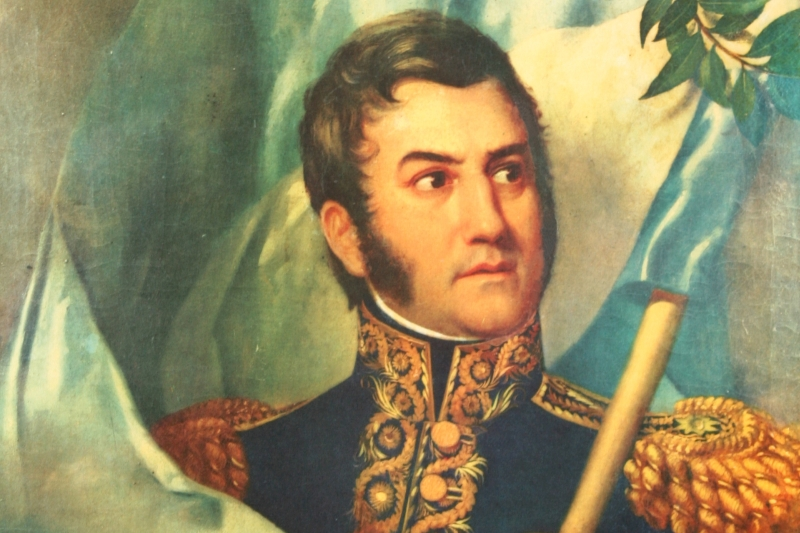

25 de Mayo
El 25 de mayo de 1810 marcó el inicio del proceso de independencia argentina con la formación de la Primera
Junta, el primer gobierno patrio. Este evento ocurrió durante la Semana de Mayo, cuando los criollos en
Buenos Aires comenzaron a organizarse contra el dominio colonial español. Hoy en día, se celebra como una
fecha patriótica con desfiles, actos escolares y comidas tradicionales como el locro.
20 de Junio
El Día de la Bandera se celebra en homenaje al General Manuel Belgrano, quien creó la bandera argentina en
1812. Esta fecha coincide con el aniversario de su muerte, el 20 de junio de 1820. En Rosario, donde se izó
por primera vez la bandera, se realiza un acto oficial conmemorativo. La bandera simboliza la unión y el
orgullo nacional.
9 de Julio
El 9 de julio de 1816 se declaró oficialmente la independencia de Argentina en el Congreso de Tucumán.
Representantes de distintas provincias se reunieron para afirmar su intención de romper los lazos con España
y establecer un país soberano. Este día es celebrado con grandes desfiles, actividades culturales y actos
oficiales que refuerzan la identidad nacional.
17 de Agosto

Este 17 de agosto conmemoramos un nuevo aniversario de la muerte del General José de San Martín, ocurrida en Francia en 1850, el padre de la patria, es uno de los próceres más notables de nuestra historia y la de América, fue una figura clave e imprescindible en la consolidación de la independencia de Argentina, Chile y Perú